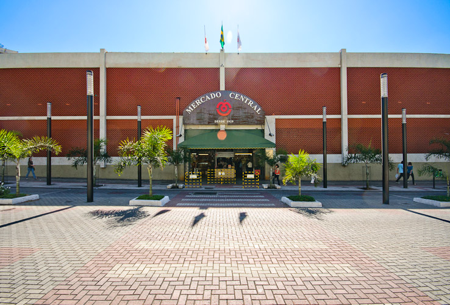
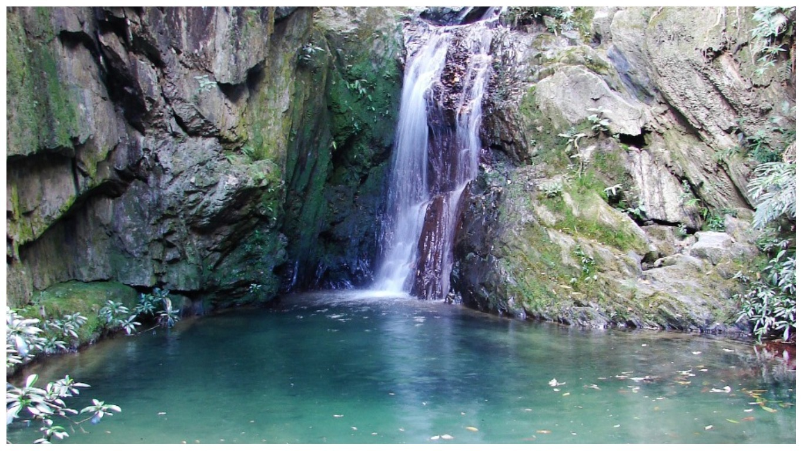

Em Belo Horizonte, coloquialmente pronunciado por nós moradores como Beozonte, temos pontos turísticos para quase todos os gostos, porque quem gosta de praia não tem vez aqui. Mas, se a sua "praia" for barzinhos, praças, cachoeiras, admirar paisagens e ver gente desconfiada, pode âncorar por aqui.
Todo bairro, por minúsculo que seja, terá o "Barzinho do Zé", e, provavelmente, haverá uma estufa com torresmos, coxa de frango frita, ovos coloridos e uma parede de 51 e cia's. A cerveja será estupidamente gelada e o copo será o lagoinha, muito utilizado também para tomar café, porque aqui um trem serve para tudo. O Mercado Central talvez seja o ponto turístico mais famoso aí fora, traz um pouquinho de tudo em um sô lugar, inclusive os bares.
Local público com Academias da Cidade, que, durante o dia, servem para exercitarmos o corpo e, de noite, para namorar, tocar um violão, andar de patins, skate e afins. As praças que se prezam, possuim também um carrinho de cachorro quente e, as vezes, o "tio da pipoca".

As cachoeiras são lindas, de verdade, e, em sua maioria, de difícil acesso. São perfeitas para relaxar a mente, mergulhar em uma água de degelo (de verdade) e renovar as energias em meio a natureza. Apesar de ter nascido aqui, conheço poucas, mas sei que existem muitas. Esse ponto turístico super vale a pena de incluir em seu roteiro.
Mineiro é um trem muito desconfiado sô, basta um rosto diferente passar na rua para receber a ligação de um vizinho perguntado: "...uai, quem é aquele cabloco". Não aconselho perguntar se tal lugar é perto, porque sempre haverá uma resposta "é logo ali", e vai por mim, nunca é. Mas, apesar da desconfiança, é um povo muito acolhedor e te receberá com queijo, café, um pedaço de bolo e suco natural.

Enfim, é um lugar muito legal de conhecer, uma cultura muito peculiar e muito bonita. O ideal é ter um amigo para lher acompanhar na diversão pois, talvez, precisará de um tradutor para entender "Pondions", "Nu", "Nepusível".
Talita Fernandes Silva_09/03/2021